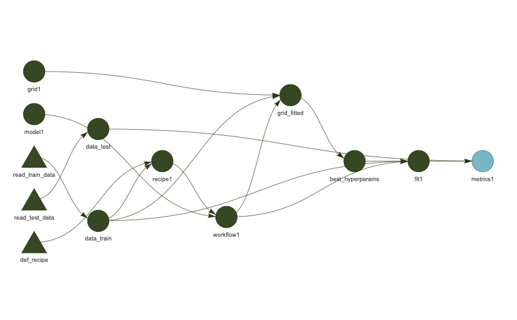

{kind=link}
library(targets)
# Funktionen einlesen:
#purrr::walk(list.files(path = "funs", pattern = ".R", full.names = TRUE), source)
source("funs/def-recipe.R")
source("funs/read-train-data.R")
source("funs/read-test-data.R")
# Optionen, z.B. allgemein verfügbare Pakete in den Targets:tar_option_set(packages = c("readr",
"dplyr",
"ggplot2",
"purrr",
"easystats",
"tidymodels",
"textrecipes"))
# Definition der Pipeline:
list(
tar_target(data_train, read_train_data()),
tar_target(data_test, read_test_data()),
tar_target(recipe1, def_recipe(data_train)
),
tar_target(model1,
logistic_reg(penalty = tune(), mixture = 1) %>%
set_mode("classification") %>%
set_engine("glmnet")
),
tar_target(workflow1,
workflow() %>% add_recipe(recipe1) %>% add_model(model1)
),
tar_target(grid1,
grid_regular(penalty(), levels = 3)
),
tar_target(grid_fitted,
tune_grid(workflow1,
resamples = vfold_cv(data_train, v = 2),
grid = grid1)
),
tar_target(best_hyperparams,
select_by_one_std_err(grid_fitted, metric = "roc_auc", penalty)
),
tar_target(fit1,
workflow1 %>% finalize_workflow(best_hyperparams) %>% fit(data_train)),
tar_target(preds,
fit1 %>%
predict(data_test) %>%
bind_cols(data_test) %>%
mutate(c1 = factor(c1))),
tar_target(metrics1,
preds %>% metrics(truth = c1, .pred_class))
)9 Projektmanagement
9.1 Am Anfang
Sie haben Großes vor! Naja, zumindest planen Sie ein neues Data-Science-Projekt.
Und, schlau wie Sie sind, stürzen Sie nicht sofort an die Tastatur, um sich einige Modelle berechnen zu lassen. Nein! Sie denken erst einmal nach. Zum Beispiel, wie die einzelnen Analyseschritte aussehen, worin sie bestehen, und in welcher Abfolge sie zu berechnen sind, s. ?fig-projekt1.
So könnte Ihr Projektplan am Anfang aussehen, man spricht auch von einer Pipeline
9.2 Sie träumen von einem Werkzeug
Nach einiger Zeit überlegen Sie sich, dass Sie ein System bräuchten, das Ihre Skizze umsetzt in tatsächliche Berechnungen. Und zwar suchen Sie ein Projektmanagement-System das folgendes Desiderata erfüllt:
- Es führt die einzelnen Schritte Ihres Projekt, die “Pipeline” in der richtigen Reihenfolge
- Es aktualisiert veraltete Objekte, aber es berechnet nicht Modelle neu, die unverändert sind
- Es ist gut zu debuggen
Ja, von so einem Werkzeug träumen Sie.
Und tatsächlich, Ihr Traum geht in Erfüllung. Dieses System existiert. Genau genommen gibt es viele Systeme, die sich anschicken, Ihre Wünsche zu erfüllen. Wir schauen uns eines näher an, das speziell für R gemacht ist. Das R-Paket targets.
9.3 Targets
Es lohnt sich, an dieser Stelle den “Walkthrough” aus dem Benutzerhandbuch von Targets durchzuarbeiten.
Für ein Projekt ähnlich zu den, die wir in diesem Buch bearbeiten, ist folgende _targets.R-Datei ein guter Start.
Dann kann man auf den Play-Button drücken und die ganze Pipeline wird berechnet:
tar_make()Wenn die Pipeline aktuell ist, und nichts berechnet werden muss (und daher auch schon fehlerfrei durchgelaufen ist), sieht die Ausgabe so aus:
✔ skip target grid1
✔ skip target model1
✔ skip target data_train
✔ skip target data_test
✔ skip target recipe1
✔ skip target workflow1
✔ skip target grid_fitted
✔ skip target best_hyperparams
✔ skip target fit1
✔ skip target preds
✔ skip target metrics1
✔ skip pipeline [0.121 seconds]Die Pipeline kann man sich als DAG bzw. als Abhängigkeitsgraph visualisieren lassen:
tar_visnetwork()
Einzelne Objekte kann man sich komfortabel anschauen mit tar_load(objekt), z.B. tar_load(fit1) usw.